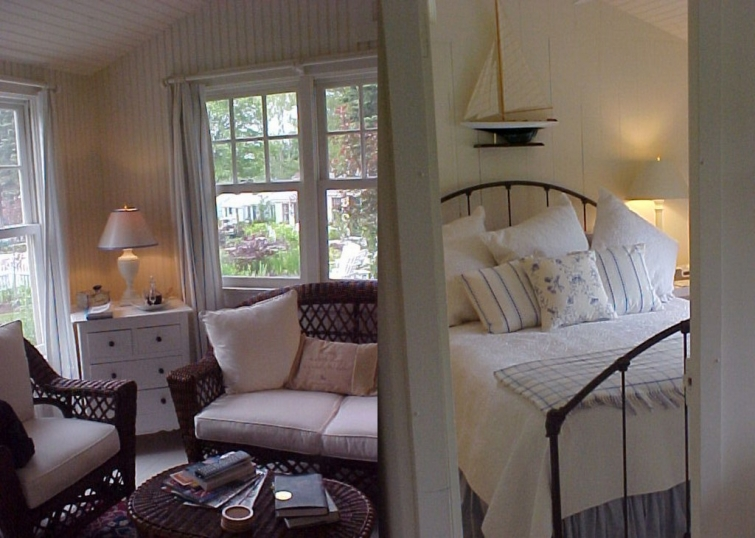
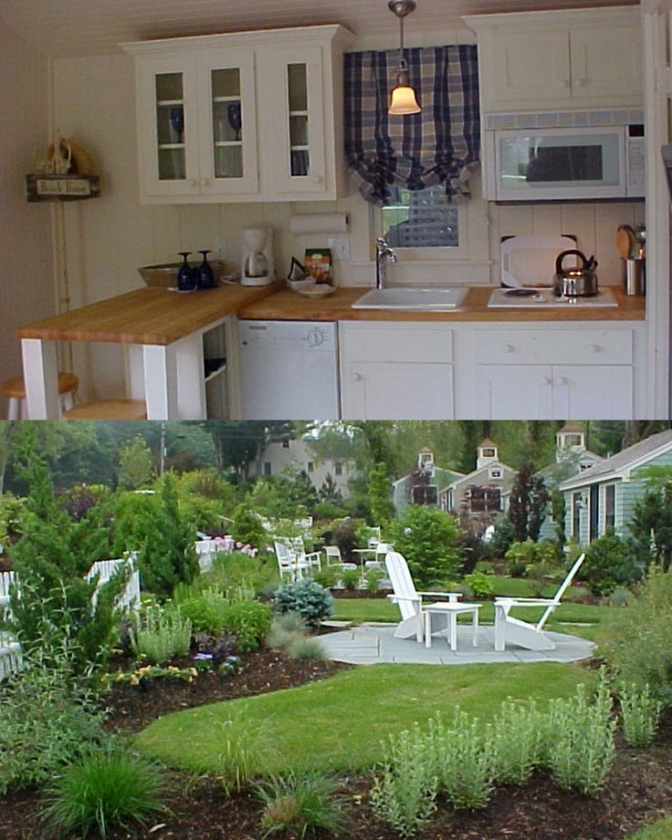
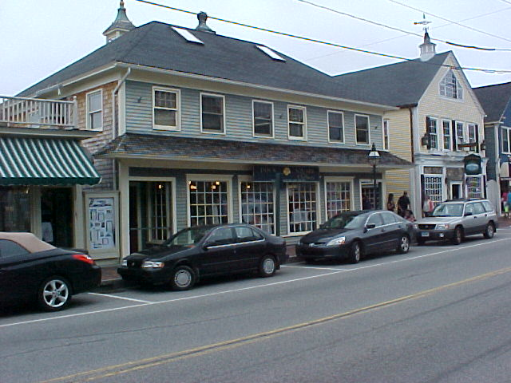

.png)
.PNG)
.PNG)
.PNG)
.PNG)
.PNG)
.JPG)
.JPG)
.PNG)
.PNG)


We finally found our disk with our pictures from 2006. Yay! 🙂 So here are a few photos from our stay in Tranquility Cottage.
I know the quality is not as good as the professional ones from their website, but at least you get to see the kitchen in the cottage. While we are on our virtual vacation here I thought we might tour Kennebunkport and some of the nearby areas.
So let’s drive to downtown Kennebunkport….
and do a little shopping. I have to buy a sweatshirt because it is chilly at night.
rhumblinemaine.com
One of my favorite places to shop here is Cooper’s Corner. If I remember correctly, there is a little boutique that has a real VW Beetle parked inside! For the life of me, I cannot figure out how they got it there…must have assembled it inside the shop.
 flickr.com
flickr.com
There is a newer inn in Kennebunkport to check out after we finish our shopping…
The Tides Beach Club.
tidesbeachclubmaine.com
It was restored in 2010-2011. Have a look at the porch. I’m loving all the yellow!
tidesbeachclubmaine.com
Now walk on into the lobby.


tidesbeachclubmaine.com
This little corner is my favorite space in here.
They have used quite a bit of Jonathan Adler furnishings, and I believe this is called the Adler Suite.

tidesbeachclubmaine.com
This is definitely more modern and sophisticated than where we were staying, but I do like it. It would be an interesting change of scenery.
After touring the Tides Beach Club, we are going to head back down Ocean Avenue where we saw The Stone House the other day.
This is a private residence…yep.
Near The Stone House is this lovely place…
The Cape Arundel Inn. Had we not chosen the Cabot Cove Cottages, this would have been where we would have stayed. Here is a look inside the inn from their website…
capearundelinn.com
and more photos to give you a better feel for the place. Doesn’t it just look like the epitome of a New England summer?
capearundelinn.com
They boast that they are the only oceanfront inn with views of this place…
This is the Bush family compound. Here is a better view of it. 
exploremainetoday.com
There are a couple of places along Ocean Avenue where you can pull over and take a photograph of it.
Now we are going to head north, and take in one of the most photographed places in Maine – The Portland Head Lighthouse in Cape Elizabeth. The sun has come out and the views here are gorgeous!!
(I thought I would include one photo of me in “tourist mode” since we are all being virtual tourists here. 🙂 )
This is a more professional photo of the lighthouse for you.
wikimedia.org
I think it would be a good idea to stop for a bite to eat at this point. If we drive a little further we will come to The Lobster Shack.
roadfood.com
roadfood.com
Try the lobster rolls. They are yummy!! Unlike most places, they put their mayo on the side so you can mix it in with the amount that you prefer. 
pressherald.com
After we finish our meal, we will head back to our cottage. In the next part of our trip, we are going to drive south to visit another lighthouse and a VERY cute little village.
See you then!


.PNG)
I have also never had a Lobster roll and would most definitely make a pig out of myself if I had some!
Yes to those yellow rockers! They are deep which looks comfy for long-legged ppl like me.
————————————————————————
Phyllis that porch looks like somewhere I could sit for a very long time!! Thanks for stopping by and reading here.
Kelly
What a beautiful area! Love that Jonathon Adler room. Can you believe it? I have never tasted a lobster roll before. I must remedy that soon!
———————————————————————–
It was a very beautiful area Susan – not only in the buildings but also in the natural beauty of the landscape. I had never tasted a lobster roll until we went on that trip. I believe eating them every single day contributed to my becoming allergic to shellfish the following summer – no proof just think it. So if you start eating them, don’t be a glutton like I was! 🙂
Kelly
I’m loving the yellow cushions on that porch and the rubbed turquoise chest w/ lamps. Great decorating shots on your vacay!
————————————————————————
Julianna, isn’t that a great porch?! Makes me want to recover all my khaki cushions in a happy yellow!
Kelly
Great pics. Kelly. This “virtual” tour will have to do for me this year. I’ve got too many projects going on! With your love of Maine I have to ask-have your read ‘Colony’ by my favorite author, Ann River Siddens? If not, you must read it!
—————————————————————————–
Glad I can give you a vacation, Pam…even if it is only a virtual one! I’ve not read Colony, but I did read Up Island by Ann Rivers Siddons. It was about Martha’s Vineyard (my REAL travel love.) I will have to find time to read Colony this summer (probably in the bathtub since every other minute seems filled!) 🙂 Thanks for the book recommendation and your comments here.
Kelly
What a great tour, Kelly! I visited Kennebunkport years ago, and you did such a good job of capturing its singular “New England-ness.”I love the line about needing a sweatshirt. 🙂
———————————————————————–
Thank you Aimee for always being such a thoughtful “comment-er” (commentator?) Wasn’t Kennebunkport a pretty town to visit? I could have used a sweatshirt AND a coat while I was there, and to think that was in June!
Kelly